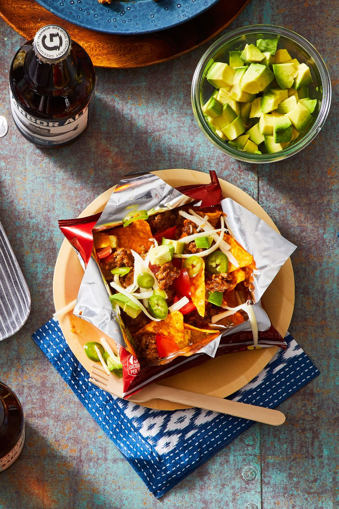
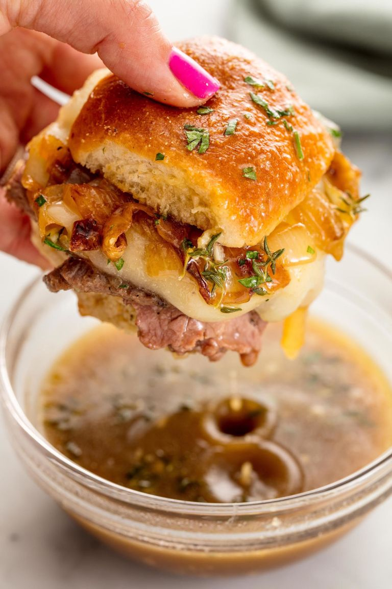
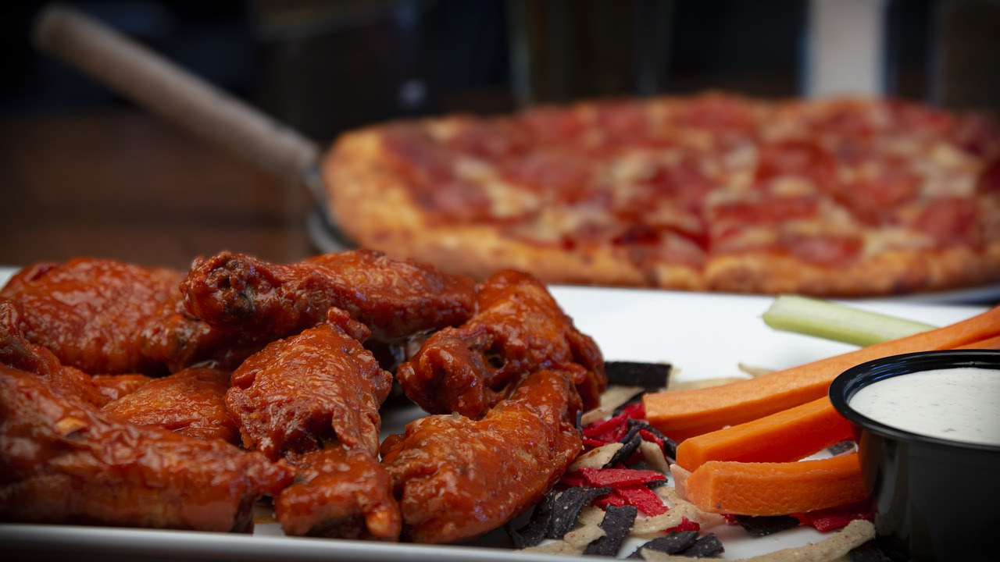

A Walking Taco is a frito bag filled with flavorful chili and toppings! Tacos in a bag are perfect for any party and let’s face it, just so fun to eat.
Sliders are my new favorite way to eat French Dip. Everything bakes together in the oven to create a taste that isn’t the same as any average sandwich.
The pinnacle food choice for any super bowl party. This is the class choice and a fan favorite
